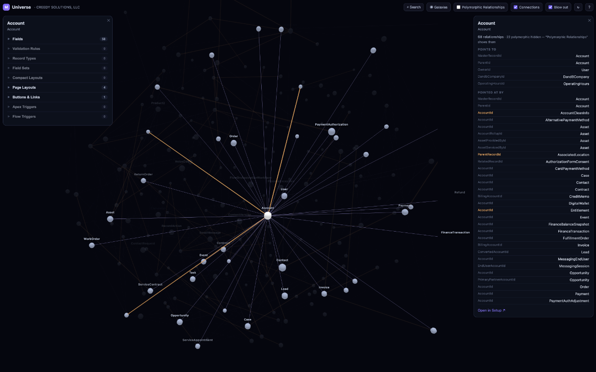
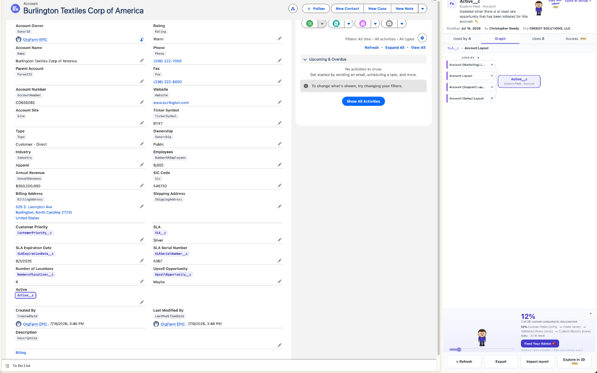

Click any component in Setup — a field, flow, Apex class, or layout — and Marco shows everywhere it's used, both directions, in a side panel. Then step back and explore your entire org schema as a 3D universe.


Marco is built for Salesforce admins, architects, and developers who are tired of clicking through Setup to reverse-engineer their own org.
Uses on one side, used-by on the other. Click any node to re-walk the graph from there — breadcrumbs bring you back.
Your whole schema as a navigable universe. Warp-search any object, show or hide galaxies, and open an Object Manager-style detail card where every row deep-links into Setup.
Flows are tagged with whether they read or write the focused field — resolved through variables, formulas, and $Record.
Marco's own metadata scan covers what Salesforce's dependency API can't see — layouts, validation rules, active flows, quick actions, compact layouts.
A printable “what breaks if I change this” document with risk tiles and a generated checklist — attach it to your change request.
Documentation-health gamification: a coverage score, an impact-sorted queue, and a pixel admin that grows from egg to superhero as your org gets documented.
Start free. Go PRO when you want the deep stuff.